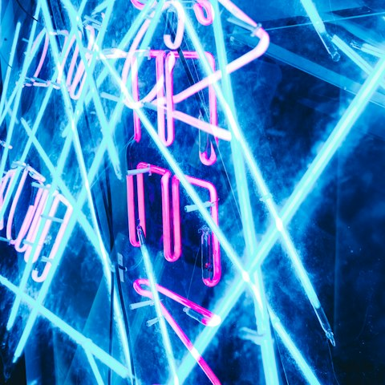

Kaito Ren for Northlight
Culture · Long read
7 min left of 12
The sign that kept Rua da Rosa awake
A studio, a landlord and three nights of argument over a tube of pink light.

Mei Lin
Photographs by Kaito Ren · November issue
By the third night the studio had stopped arguing about the sign. Kaito Ren wanted it pink; the landlord wanted it gone. The street, it turned out, had already decided: by midnight on Friday there were forty people on the cobbles, looking up.
“Neon is a promise you make to the street at two in the morning.”
Kaito Ren, who bent the tubes by hand
The sign stayed. So did the crowd, which now gathers under it every Friday and peaks, as the bar staff will tell you, a little before two.
Under the sign, a FridayPeople on Rua da Rosa, counted each hour
202122230001020304
 Ravi Nair and 2 friends highlighted this story
Ravi Nair and 2 friends highlighted this story

Next in the November issue · 9 min
The last night ferry to Cacilhas